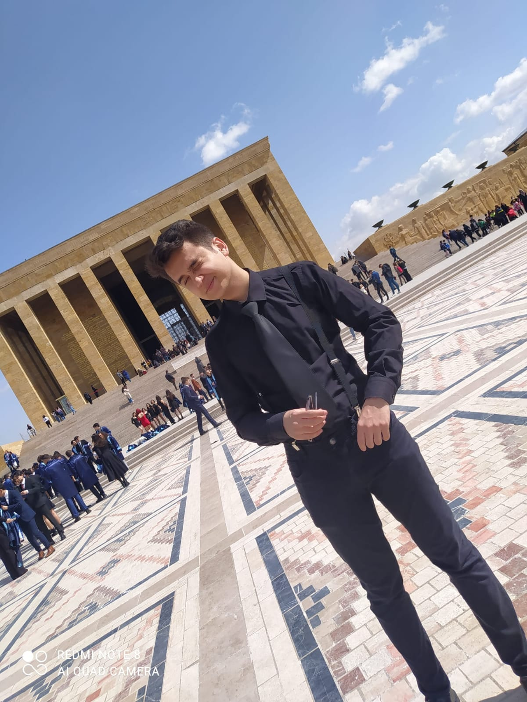

Ben Ali Samet Armağan. 16 Ekim 2003 Tarihinde Perşembe günü Kayseri Melikgazi'de doğdum. Çocukluğum Ankara'nın etimesgut ilçesinde geçti. Ilk okulu da bura da bulunan Cahit Zarifoğlu ilk okulunda tamamladım.Daha sonra babamın işi dolayısıyla Urfa'ya taşındık. Burada 4 sene kaldık ve Ortaokul öğrenimimi burada tamamladım. Bu bana farklı kültürler örf ve adetler öğretti. Babam buradan sonra emekli oldu ve tekrar Ankara'ya taşındık. Liseyi Burada Bulunan "Ankara Atatürk Anadolu Lisesin'de" okudum ve mezun oldum. Buradan sonra Sakarya da istediğim bölüm olan Bilgisayar Mühendisliği bölümün kazandım. Burada halen okumaktayım.